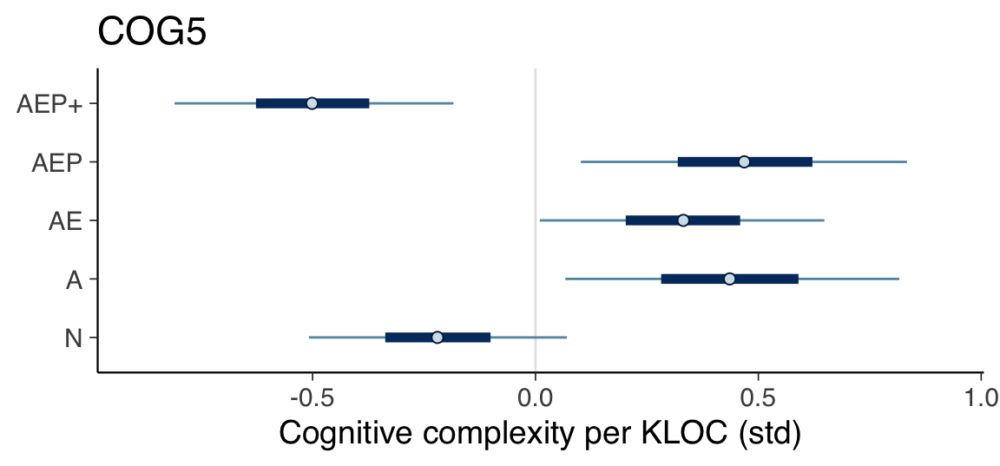
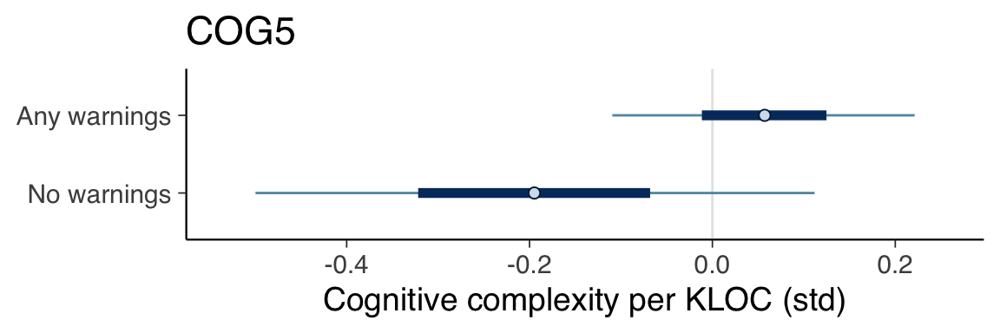

Chapter 14 Cognitive Complexity
This section covers the analysis relating to the cognitive complexity metric.
14.1 Prepare data
model_seed <- 20230403 # Analysis conducted on April 4, 2023
create_cognitive_complexity_data <- function(data) {
list(
cognitive_complexity_kloc_std=scale(data$cognitive_complexity_kloc),
contributors_std=scale(data$contributors),
stars_std=scale(data$stars),
files_std=scale(data$files),
size_std=scale(data$loc),
age_std=scale(get_age(data$created_at))
)
}
data <- create_cognitive_complexity_data(df)
data$category <- factor(df$category)14.2 Define models
14.2.1 COG1
fit_model_cog1 <- function(name, data) {
fit_model(name,
"cognitive_complexity_kloc_std ~ 0 + category",
c(
prior(normal(0, 1), class=b),
prior(exponential(1), class=sigma)
),
data,
model_seed)
}
cog1 <- fit_model_cog1("cog1", data)14.2.2 COG2
fit_model_cog2 <- function(name, data) {
fit_model(name,
"cognitive_complexity_kloc_std ~ 0 + category + contributors_std",
c(
prior(normal(0, 1), class=b),
prior(normal(0, 1), class=b, coef="contributors_std"),
prior(exponential(1), class=sigma)
),
data,
model_seed)
}
cog2 <- fit_model_cog2("cog2", data)14.2.3 COG3
fit_model_cog3 <- function(name, data) {
fit_model(name,
"cognitive_complexity_kloc_std ~ 0 + category + stars_std",
c(
prior(normal(0, 1), class=b),
prior(normal(0, 1), class=b, coef="stars_std"),
prior(exponential(1), class=sigma)
),
data,
model_seed)
}
cog3 <- fit_model_cog3("cog3", data)14.2.4 COG4
fit_model_cog4 <- function(name, data) {
fit_model(name,
"cognitive_complexity_kloc_std ~ 0 + category + size_std",
c(
prior(normal(0, 1), class=b),
prior(normal(0, 1), class=b, coef="size_std"),
prior(exponential(1), class=sigma)
),
data,
model_seed)
}
cog4 <- fit_model_cog4("cog4", data)14.2.5 COG5
fit_model_cog5 <- function(name, data) {
fit_model(name,
"cognitive_complexity_kloc_std ~ 0 + category + files_std",
c(
prior(normal(0, 1), class=b),
prior(normal(0, 1), class=b, coef="files_std"),
prior(exponential(1), class=sigma)
),
data,
model_seed)
}
cog5 <- fit_model_cog5("cog5", data)14.2.6 COG6
fit_model_cog6 <- function(name, data) {
fit_model(name,
"cognitive_complexity_kloc_std ~ 0 + category + age_std",
c(
prior(normal(0, 1), class=b),
prior(normal(0, 1), class=b, coef="age_std"),
prior(exponential(1), class=sigma)
),
data,
model_seed)
}
cog6 <- fit_model_cog6("cog6", data)14.2.7 COG7
fit_model_cog7 <- function(name, data) {
fit_model(name,
"cognitive_complexity_kloc_std ~ 0 + category + size_std + age_std",
c(
prior(normal(0, 1), class=b),
prior(normal(0, 1), class=b, coef="size_std"),
prior(normal(0, 1), class=b, coef="age_std"),
prior(exponential(1), class=sigma)
),
data,
model_seed)
}
cog7 <- fit_model_cog7("cog7", data)14.2.8 COG8
fit_model_cog8 <- function(name, data) {
fit_model(name,
"cognitive_complexity_kloc_std ~ 0 + category + size_std + contributors_std",
c(
prior(normal(0, 1), class=b),
prior(normal(0, 1), class=b, coef="size_std"),
prior(normal(0, 1), class=b, coef="contributors_std"),
prior(exponential(1), class=sigma)
),
data,
model_seed)
}
cog8 <- fit_model_cog8("cog8", data)14.3 Compare models
cog1 <- add_criterion(cog1, criterion="loo", moment_match=TRUE)
cog2 <- add_criterion(cog2, criterion="loo", moment_match=TRUE)
cog3 <- add_criterion(cog3, criterion="loo", moment_match=TRUE)
cog4 <- add_criterion(cog4, criterion="loo", moment_match=TRUE)
cog5 <- add_criterion(cog5, criterion="loo", moment_match=TRUE)
cog6 <- add_criterion(cog6, criterion="loo", moment_match=TRUE)
cog7 <- add_criterion(cog7, criterion="loo", moment_match=TRUE)
cog8 <- add_criterion(cog8, criterion="loo", moment_match=TRUE)
print(loo_compare(cog1, cog2, cog3, cog4, cog5, cog6, cog7, cog8, criterion="loo"),
simplify=FALSE)## elpd_diff se_diff elpd_loo se_elpd_loo p_loo se_p_loo looic se_looic
## cog5 0.0 0.0 -178.7 11.3 12.0 2.9 357.5 22.5
## cog8 -0.9 2.7 -179.7 11.7 12.6 2.9 359.3 23.4
## cog4 -2.4 1.5 -181.2 11.3 11.6 2.8 362.3 22.5
## cog3 -2.9 3.1 -181.6 12.3 11.8 3.0 363.2 24.6
## cog1 -3.2 2.3 -182.0 11.8 11.0 2.8 364.0 23.5
## cog7 -3.4 1.5 -182.1 11.4 12.7 3.0 364.3 22.8
## cog2 -3.8 2.8 -182.6 12.0 12.5 3.4 365.1 24.0
## cog6 -4.4 2.4 -183.1 11.8 12.1 3.1 366.2 23.614.4 Determine natural scale values
summary(cog5)## Family: gaussian
## Links: mu = identity; sigma = identity
## Formula: cognitive_complexity_kloc_std ~ 0 + category + files_std
## Data: data (Number of observations: 127)
## Draws: 4 chains, each with iter = 10000; warmup = 5000; thin = 1;
## total post-warmup draws = 20000
##
## Population-Level Effects:
## Estimate Est.Error l-95% CI u-95% CI Rhat Bulk_ESS Tail_ESS
## category1 -0.22 0.18 -0.56 0.13 1.00 38115 15725
## category2 0.44 0.23 -0.01 0.89 1.00 40826 14941
## category3 0.33 0.19 -0.06 0.71 1.00 38934 14939
## category4 -0.40 0.43 -1.24 0.43 1.00 39467 13997
## category5 0.47 0.22 0.03 0.91 1.00 41165 14414
## category6 -0.25 0.32 -0.86 0.37 1.00 42885 14560
## category7 -0.50 0.19 -0.87 -0.12 1.00 39110 14053
## category8 -0.69 0.68 -2.02 0.65 1.00 42832 15226
## category9 -0.04 0.69 -1.39 1.31 1.00 41813 14193
## category10 0.42 0.47 -0.51 1.34 1.00 39381 14067
## category11 -0.67 0.68 -2.01 0.68 1.00 40782 14026
## files_std -0.25 0.09 -0.42 -0.08 1.00 35824 16599
##
## Family Specific Parameters:
## Estimate Est.Error l-95% CI u-95% CI Rhat Bulk_ESS Tail_ESS
## sigma 0.93 0.06 0.82 1.06 1.00 34586 15202
##
## Draws were sampled using sampling(NUTS). For each parameter, Bulk_ESS
## and Tail_ESS are effective sample size measures, and Rhat is the potential
## scale reduction factor on split chains (at convergence, Rhat = 1).print(create_natural_scale_summary_df(cog5, df$cognitive_complexity_kloc))## Mean SD 0.05 CI 0.95 CI
## N 94.75 121.61 75.28 114.22
## A 139.07 124.97 114.22 164.58
## AE 131.68 122.28 110.19 153.17
## AEP 141.08 124.29 116.24 165.25
## AEP+ 75.95 122.28 55.13 97.4414.5 Credible intervals of major categories
plot_intervals_of_major_categories(cog5) +
labs(title="COG5", x="Cognitive complexity per KLOC (std)")
14.6 Warnings versus no warnings
data_factor_uses_warnings <- create_cognitive_complexity_data(df)
data_factor_uses_warnings$category <- factor(uses_warnings(df$category))
cog5_factor_uses_warnings <- fit_model_cog5("cog5_factor_uses_warnings",
data_factor_uses_warnings)
plot_intervals_of_categories(cog5_factor_uses_warnings) +
labs(title="COG5", x="Cognitive complexity per KLOC (std)") +
scale_y_discrete(labels=c(
"b_category1"="No warnings",
"b_category2"="Any warnings"
))